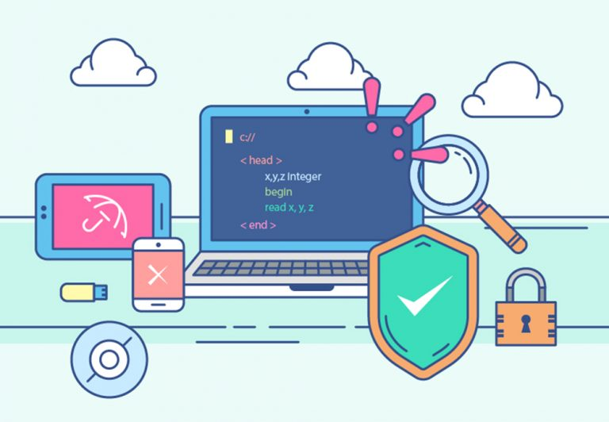

site para documentar os conhecimentos desenvolvidos durante a impresionante aventura em Arquitetura de Hardware e Software.
Nesta parte voce vai encontrar informaçao sobre hardware.
Nesta parte voce vai encontrar muitas informaçaoes deliciosas sobre Software.
O sistema operacional é um software, ou conjunto de softwares, cuja função é administrar e gerenciar os recursos de um sistema, desde componentes de hardware e sistemas de arquivos a programas de terceiros, estabelecendo a interface entre o computador e o usuário. Entenda como um “computador” qualquer máquina de processamento automático de dados, como um desktop, notebook ou celular e um console de videogame, por exemplo.
https://tecnoblog.net/responde/o-que-e-um-sistema-operacional/ fonteCuriosidades sobre o Windows
Em novembro de 1985, a Microsoft lançou o Windows 1.0 oficialmente, como sua primeira tentativa de trazer para o público um sistema interativo. Ele era bastante limitado, vindo apenas com o bloco de notas, um relógio, a calculadora, o velho e antigo Paint, um joguinho chamado Reversi, um editor para cartões, o Microsoft Writer e outros programas de computação. Um de seus destaques é que ele contava com muitas cores, em um visual novo e chamativo. Ele também se destacou por ser o primeiro a utilizar o mouse para facilitar o uso e também com suporte a atalhos na tela pelos ícones e janelas. Porém, mesmo com essas melhorias, a Microsoft só declarou o Windows como um sistema operacional de fato com a chegada do Windows NT em 1993
fonteO que é um driver? Driver de dispositivo (por vezes simplesmente chamado de driver ) é um programa de software que diz ao sistema operacional do se
pra que serve?O Drive oferece acesso criptografado e seguro aos seus arquivos. Os arquivos compartilhados podem ser verificados e removidos proativamente se forem malware, spam, ransomware ou phishing. O Drive é nativo da nuvem, o que elimina a necessidade de arquivos locais e diminui o risco para seus dispositivos.
Curiosidades sobre o drive?O Drive complementa e se integra à tecnologia usada pela sua equipe. Colabore nos arquivos do Microsoft Office sem precisar converter qualquer formato. Além disso, é possível editar e armazenar mais de 100 outros tipos de arquivo, como PDFs, CADs, imagens e muito mais.
programa aplicativo aplicativo prontos aplicativo costomizadoso que e?Um programa de computador ou programa informático é um conjunto de instruções que descrevem uma tarefa a ser realizada por um computador. O termo pode ser uma referência ao código fonte, escrito em alguma linguagem de programação, ou ao arquivo que contém a forma executável deste código fonte.
pra que serve?é um conjunto de instruções ou declarações a serem usadas direta ou indiretamente por um computador, a fim de obter um determinado resultado. Ele é composto por um código-fonte, desenvolvido em alguma linguagem de programação.
curiosidades?O programa de computador surgiu antes do desenvolvimento do computador eletrônico. Um trabalho publicado em 1843 por Ada Lovelace, sugerindo uma forma para calcular os números de Bernoulli através da máquina analítica de Charles Babbage, é tido como o primeiro programa de computador
O que e?
Pra que serve?
Curiosidades?

O que e? Software livre é o software que concede liberdade ao usuário para executar, acessar e modificar o código fonte, e redistribuir cópias com ou sem modificações. Sua definição é estabelecida pela Free Software Foundation em conjunto com o projeto GNU.
Pra que serve? é um movimento que visa promover o compartilhamento de conhecimento e criar uma cultura de colaboração na comunidade de desenvolvedores. O software livre pode ser usado para qualquer propósito, desde desenvolvimento de software até pesquisa científica.
Curiosidades sobre software livre?software livre possui uma grande vantagem em relação ao software proprietário, especialmente para as empresas, pelo não pagamento de licenças. Licenças de softwares podem representar um imenso custo a cada ano para a utilização e atualização de tais programas.
O que e?O software proprietário pertence a um indivíduo ou empresa e não está disponível para modificação ou distribuição pública. Os usuários normalmente devem adquirir licenças para usar software proprietário, o que geralmente inclui restrições sobre como o software pode ser usado.
Pra que serve?O software proprietário, privativo ou não livre, é um software para computadores que é licenciado com direitos exclusivos para o produtor. Conforme o local de distribuição do software, este pode ser abrangido por patentes, direitos de autor, assim como limitações para a sua exportação e uso em países terceiros.
Curiosidades sobre software propriedario? 
O que e linceça de software? O licenciamento é um documento contratual usado por desenvolvedores de programas digitais.
Tipos de linceça de software:
Nesse tipo de licença, o usuário ganha uma permissão bem limitada para usar o software. Só é autorizada a sua instalação em apenas um ou alguns computadores e por um tempo previamente acordado. Essa licença inclui atualizações por parte do desenvolvedor, mas os custos com manutenções são de responsabilidade do usuário.
também conhecidos como “programas de código aberto”, têm licença de uso, mesmo que isso não envolva valores por suas liberações. Nesse modelo de autorização, a empresa fica isenta dos custos ligados ao desenvolvimento. Entretanto, ela pode ter que arcar com o pagamento de algumas taxas de manutenção, principalmente quando for hospedar a aplicação nos servidores.
Pra que serve licença de software?esse documento que determina quem pode usar o software, restringindo o seu uso a determinados usuários, como os colaboradores da empresa. A licença de software também vai dizer como ele pode ser usado - a sua finalidade e tarefas. Ela determina ainda o período de tempo em que ele está disponível e o seu preço
P A função primordial do copyright é a proteção. Ele serve como um baluarte legal e moral, garantindo que os criadores de conteúdo tenham total controle sobre suas obras. Assim, os autores são capazes de determinar como, onde e quando suas obras podem ser usadas, assegurando a eles os méritos e lucros correspondentes